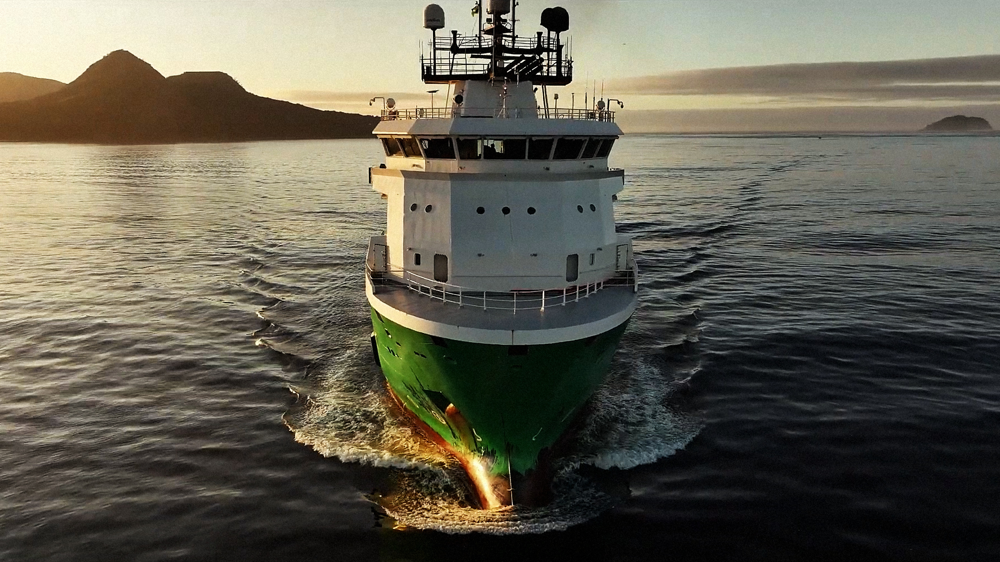

- Operações
- Frota
- Tecnologia
- Pessoas
- Contato
- PT / EN
Grande na
superfície.
Dezoito embarcações, 55 ROVs e 2.378 pessoas em operação offshore e submarina, de 0 a 3.000 metros.
Maior
abaixo dela.
Dezoito embarcações, 55 ROVs e 2.378 pessoas em operação offshore e submarina, de 0 a 3.000 metros.
Descer com a operação ↓